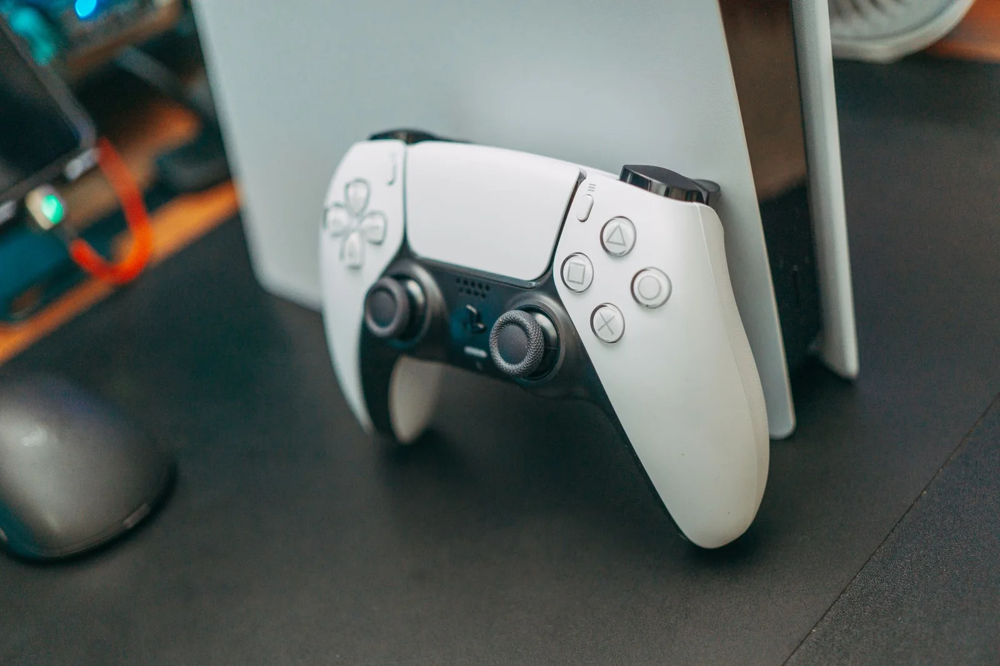

Mando de consola o para PC
El DualSense ofrece funciones de vibración y gatillos compatibles con juegos seleccionados; Xbox Wireless Controller funciona en consolas Xbox y muchos equipos Windows, con conexión que depende del modelo y adaptador. Nintendo Switch utiliza Joy-Con y Pro Controller con funciones específicas del sistema. En PC, revisa si un juego reconoce el mando de forma nativa y si la conexión Bluetooth, USB o un adaptador conserva las funciones que quieres.
Ergonomía, gatillos y botones
Prueba el tamaño, el peso y la posición de palancas si tienes ocasión. Los gatillos largos pueden ser útiles en carreras; una cruceta cómoda ayuda en plataformas y lucha. Los botones traseros y perfiles personalizables no mejoran cada juego y pueden añadir coste o complejidad. Si tienes manos pequeñas, dolor o movilidad limitada, busca modelos con remapeo, sensibilidad ajustable y opciones de acceso antes de priorizar prestaciones competitivas.

Conexión, batería y reparación
USB ofrece una conexión directa y evita depender de batería; Bluetooth reduce cables pero puede requerir emparejamiento y variar en latencia. Consulta duración declarada y si el mando permite reemplazar batería o usar pilas. Investiga garantía, repuestos y política de reparación. La vida útil depende del trato y los componentes; las reseñas técnicas que miden latencia y desgaste son más útiles que una afirmación publicitaria sin método.
Mandos adaptativos y accesibilidad
Xbox Adaptive Controller y otros sistemas modulares permiten conectar periféricos externos para distintas necesidades de acceso. Los controles de PS5 y Switch incluyen opciones propias que pueden ayudar, aunque no sustituyen una prueba personal. Comprueba compatibilidad con la plataforma y los juegos que quieres usar. La configuración ideal puede incluir botones más grandes, soportes, remapeo o control por interruptores; no existe una solución universal.
Lista de compra
Anota el sistema, conexión, juegos y funciones que necesitas. Verifica el código de modelo, compatibilidad con actualización de firmware, cable o adaptador incluido y gastos de devolución. Compara el coste total y compra en una tienda con garantía clara. Si el mando es para PC, consulta la lista de dispositivos compatibles del juego y prueba en una sesión corta antes de depender de él para una competición.
En resumen
DualSense, Xbox Wireless Controller, mandos de Switch y opciones adaptativas resuelven necesidades diferentes. Elige por comodidad, compatibilidad y mantenimiento, y confirma la ficha del modelo exacto antes de comprar.
Preguntas frecuentes
¿Qué mando es mejor para PC?
Depende de ergonomía y compatibilidad del juego; los mandos Xbox y PlayStation tienen soporte amplio, pero algunas funciones son específicas.
¿Bluetooth añade retraso?
La latencia depende del dispositivo, conexión y configuración; compara pruebas del modelo y usa cable si priorizas consistencia.
¿Qué mando es más accesible?
Los sistemas modulares como Xbox Adaptive Controller ofrecen opciones personalizables; revisa necesidades y compatibilidad concreta.
Fuentes y lecturas
Consulta la fuente original cuando exista y su fecha; los anuncios, el catálogo y las guías de terceros pueden cambiar.